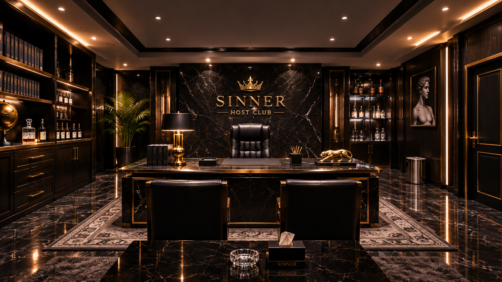

지배인의 사무실
화면을 드래그하거나 ◀ ▶ 버튼·키보드 방향키로 네 방향의 독립된 사진을 전환하세요. 사진 비율은 고정됩니다. 빛나는 표식을 클릭해 조사합니다.

정면 · 0°
기존 1라운드 아이폰에서 발견한 대현마트 영수증을 다시 확인해도 됩니다. 증거를 클릭하면 다시 볼 수 있습니다.
네 자리 비밀번호를 입력하세요.
화면을 드래그하거나 ◀ ▶ 버튼·키보드 방향키로 네 방향의 독립된 사진을 전환하세요. 사진 비율은 고정됩니다. 빛나는 표식을 클릭해 조사합니다.

기존 1라운드 아이폰에서 발견한 대현마트 영수증을 다시 확인해도 됩니다. 증거를 클릭하면 다시 볼 수 있습니다.
네 자리 비밀번호를 입력하세요.